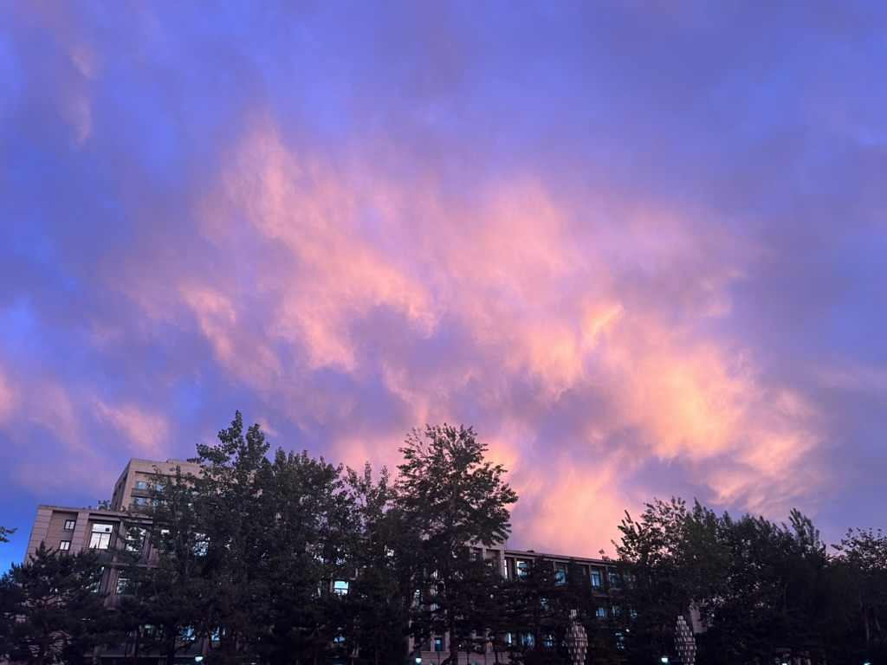

Hi, there!
Here is one of the smallest contributions to Open Science.
Building everything from scratch is difficult.
So, I will share resources that I have found to be well organised, easy to understand, and creative.
